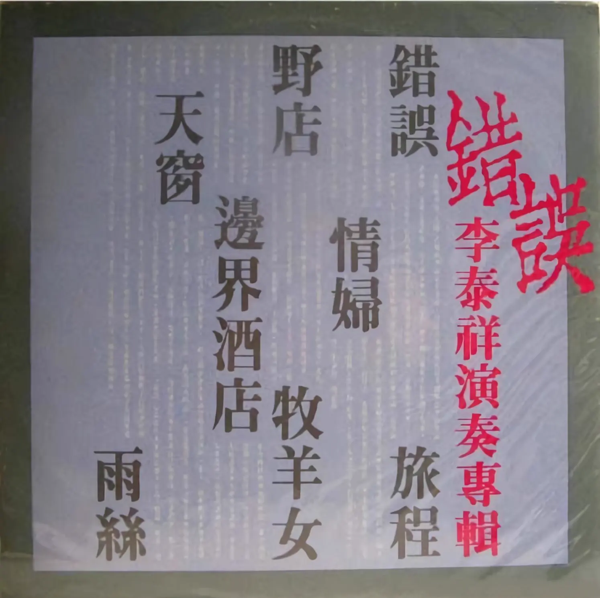

Album#11
錯誤
{kind=link}

专辑信息
- 专辑名称：错误
- 歌手：李泰祥
- 年份：1985-09-25
- 风格：流行、民谣
- 时长：约 35 分钟
因为《告别》这首歌，找来听的专辑。唐晓诗的已经在 Album#10 - 唐晓诗专辑 分享过了，再分享一张 李泰祥 的专辑。
为什么选这张，一方面是歌曲相对经典，另一方面我想找点封面有特色的，放到 Album Wall 中。
关于专辑：
诗是诗歌，原本是可以唱的。所以李泰祥弹着琴唱起了郑愁予的诗句，低吟长歌间：天地人、你我他混沌为晴空阴雨，也无所谓时空交错——顺流而下，逆流而上……放歌千万里！
[…]
《错误》专辑的作曲、编曲由李泰祥一个人完成。在乐器的运用上，他分别使用了小、中、大低提琴、长笛、双簧管、单簧管、吉他、钢琴、琵琶及笛、巴乌和箫。他没有按照西洋民谣的形式去表达，因为西洋民谣根本违背了郑愁予诗作浓厚的中国韵味。但是他把西洋的明亮、深沉取了过来，与中国的内敛、遥思胶合在了一起。
专辑的词都是 郑愁予 的诗，诗句都很美。李泰祥的编曲和演唱，让诗成了歌，他声音沧桑悠远、高昂嘹亮，很好地唱出了诗中的感觉。
专辑整体给我的感觉是沉重的、伤感的，情感很浓厚，是好听的，但不是那种我会没事翻出来听的专辑。它需要安静地去品味，适合在一个有点冷、有点风的夜晚，在一个相对幽静的公园里散步时听。
TRACKLIST
错误
我打江南走过
那等在季节里的容颜
如莲花的开落
东风不来 三月的柳絮不飞
你的心如小小的寂寞的城
恰若青石的街道向晚
跫音不响 三月的春帷不揭
你的心如小小的窗扉紧掩
啦…… 啦……
我哒哒的马蹄 是美丽的错误
我不是归人 我不是归人
是个过客 是个过客
是个过客
《错误》描写的是一个妇人在等待丈夫，不知道是什么原因，丈夫出去了很久都没有回来，可能是战争、可能是远行谋求生计……她听到了哒哒的马蹄声，急切地、充满盼望地出来张望，看到的却不是等待许久的归人，不过是一位过客，她眼神黯淡，又紧掩心扉。而过客也瞥见了妇人的反应，或许也喜欢这位妇人，他很遗憾自己并不是那位归人，哒哒的马蹄，却是个「美丽的错误」。
歌曲开头的急促的拨弦声、提琴声，从一开头就营造了一种悲剧色彩。
罗大佑也唱过《错误》，编曲和李泰祥的相差很多。可能是先入为主，我还是更喜欢李的版本，唱出了那种遗憾、心痛、怨恨的感觉。
旅程
对我说 微温的夕阳 如怀孕的妻的吻
在去年 我们穷过 在许多友人家借了宿
可是 总得有个巢才行
在明春雪溶后，香椿芽儿那麽地
曾短暂地被喜爱
而今年 我们沿着铁道走
靠许多电杆木休息
真像背标子
挤扬旗柱熬更
多想吃那复叶
而先 病虫害了的我们
在两个城市之间
夕阳又照着了
可是 妻
妻——
被黄昏的列车辗死了
………咳。
就让那婴儿 像流星那麽胎殒罢
别惦着姓氏 与乎存嗣
反正 大荒年以后 还要谈战争
我不如仍去当佣兵（我不如仍去当佣兵）
我曾夫过 父过 也几乎走到过
《旅程》是一首听着很悲痛的歌，唱的或许是某年虫害，一家人过的非常艰难，吃不饱也无处安身，一直风餐露宿。这样的日子里，妻子和孩子都没有坚持下去，相继离世了，独留男人一个独自悲痛，哭唱着「曾夫过 父过 也几乎走到过」。
中间唱到「可是 妻 妻⸺」时，李泰祥的声音一度听着像是要哭了，让人动容。
情妇
在一青石的小城
住着我的情妇耶
而我什么也不留给她
只有一畦金线菊
和一个高高的窗口
或许
透一点长空的寂寥进来
或许
而金线菊是擅于等待的1
我想寂寥与等待
对妇人是好的
所以我去总穿一袭蓝衫子
我要她感觉
那是季节
或候鸟的来临
因我不是常常回家的那种人
《情妇》是男人的爱人，可能是战乱，男人被征兵了，无法常常回来陪着她，只能留给她寂寥和等待。他总是穿着一袭蓝衫子，仿佛是一只候鸟，一年只有一小段时间能回来见她，总是聚少离多，如同会面情妇一般。
野店
是谁传下这诗人的行业
黄昏里挂起一盏灯
是谁传下这诗人的行业
黄昏里挂起一盏灯
啊 来了
啊 来了
有命运垂在颈间的骆驼
有寂寞含在眼里的旅客
是谁挂起这盏灯啊
旷野上
一个朦胧的家
朦胧的家
旷野上
一个朦胧的家
微笑着微笑着
微笑着微笑着
微笑着微笑着
微笑着微笑着
有松火的歌的地方啊
有烧酒羊肉的地方啊
有人交换着流浪的方向
有人交换着流浪的方向
《野店》是旷野上一个朦胧的家，五湖四海的人流浪到这里，或是为了生计的人、或是寂寞的旅客，黄昏里的灯显得格外温暖。
聚在一起，仿佛有了一个临时的家，一起围炉高歌，喝酒吃肉，短暂地交流着，天亮后又各自分开，各自流浪。
感觉还蛮像青年旅舍的。
牧羊女
那有姑娘不戴花
那有少年不驰马
姑娘戴花等出嫁
少年驰马访亲家
少年驰马访亲家
ㄟ……
当你唱起我这支歌的时候
我的心懒了
我的马累了
那时……
黃昏已重了
酒囊已尽了
ㄟ……
那有花儿不残凋
那有马儿不过桥
残凋的花儿随地葬
过桥的马儿不回头
过桥的马儿不回头
ㄟ……
《牧羊女》相比前面的歌，欢快了许多。李泰祥在开头唱出了一种少年驰马的意气风发的感觉，中间又唱出一种遗憾和难过，最后又是一种无奈、豁达和洒脱。
大概是在草原上，一位驰马的少年碰见了一位美丽的牧羊女，于是唱起了「那有姑娘不戴花、那有少年不驰马」去接近牧羊女，一起玩乐了一天，姑娘都能唱出这首歌了，此时已尽黄昏，但少年只是路过，无法停留，于是心里感到难过，但终归要走，「那有花儿不残凋 那有马儿不过桥」没办法呀，那就走吧！
还有其他版本也可以听听：
- 牧羊女 - 齐豫
- 牧歌 - 陈俪玲
- 牧歌 - 李建复
其中我比较喜欢齐豫的版本，齐豫的声音很好听，编曲中跳动的吉他和急促的鼓声，像是马在驰骋一般。
边界酒店
秋天的疆土
分界在同一个夕阳下
接壤处
默立些黄菊花
而他打远道来
清醒着喝酒
窗外是异国
多想跨出去
一步即成乡愁
那美丽的乡愁
伸手可触及
或者
就饮醉了也好
或者
将歌声吐出
便不只是立着
像那雏菊
只凭边界立着
《边界酒店》是一首关于乡愁的歌，「多想跨出去 一步即成乡愁」写的真好。
天窗
每夜
星子们都来我的屋瓦上汲水
我在井底仰卧着
好深的井啊
自从有了天窗
就像亲手揭开覆身的冰雪
我是北地忍不住的春天
星子们都美丽
分占了循环着的七个夜
而那南方的蓝色的小星呢
源自春泉的水已在四壁间荡着
那叮当有声的陶瓶还未垂下来
啊
星子们都美丽
而在梦中也想着的
只有一个名字
那名字
自在得如流水
《天窗》，把天窗比做井口，不错的比喻。
雨丝
我们的恋啊，像雨丝，
在星斗与星斗间的路上，
我们的车舆是无声的。
曾嬉戏於透明的大森林，
曾濯足於无水的小溪，
那是挤满著莲叶灯的河床啊，
是有牵牛和鹊桥的故事
遗落在那里的……
我们的恋啊，像雨丝，
在星斗与星斗间的路上，
我们的车舆是无声的。
曾嬉戏於透明的大森林，
曾濯足於无水的小溪，
那是挤满著莲叶灯的河床啊
是有牵牛和鹊桥的故事
遗落在那里的
遗落在那里的……
我们的恋啊，像雨丝，
斜斜地，斜斜地织成淡的记忆。
而是否淡的记忆
就永留於星斗之间呢？
斜斜地，斜斜地织成淡的记忆。
而是否淡的记忆
就永留於星斗之间呢？
如今已是摔碎的珍珠
流满人世了
流满人世了
流满人世了……
齐豫也唱过《雨丝》，如诗中写到的「牵牛和鹊桥」，李泰祥的版本和齐豫的版本，像是牛郎与织女的两个版本。
雨丝洒落地上，比做是「摔碎的珍珠」流满人间，也是写的很好。
脚注:
齐豫唱过一首《菊叹》，也有一句歌词「而菊 尤其金线菊 是耐于等待的」。